Real-Time Fluorometer (RTF) Verification Procedure
Purpose
The following procedure provides instructions on how to use an RTF Verifier Tool to diagnose Panther RTF issues in Panther or Panther Fusion Systems.
Parts and Materials Required
- RTF Verifier Tool – [TLS-08117]
- Lint Free Wipes (found in Thermocycler cleaning kit)
- Fiber Optic Cleaning Solution (found in Thermocycler cleaning kit)
- Fiber Optic Cleaning Swabs (found in Thermocycler cleaning kit)
Time Required
- 1 hour
 Procedure
Procedure
Note: Keep the protective cover on the Optical surface of the tool until ready to use to avoid damage to the optical surface affecting results.
The RTF Verifier tool is for diagnostic purposes only. Send all results to your local support (EU) or USTSESupport (non-EU) for review.
Note: The images in this procedure are for Panther ONLY.
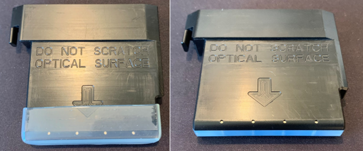
- Ensure that the Panther or Panther Fusion has Panther Software V7.2.5.1 or higher installed.
- Close all open software programs on the Panther Workstation.
- Open RTF Verifier from the service shield.
- Power cycle the Panther by toggling the systems power switch only.
Note: Do not shut off the PC.
- Click the start button in the bottom left corner of the RTF Verifier program.
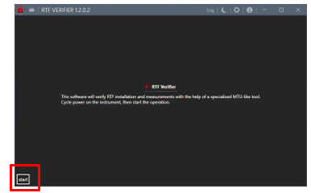
- If the RTF Verifier tool is running on an instrument that has not run the RTF Aligner tool, a warning will pop up noting that the RTFs are aligned to their default values. If you see this screen, stop the procedure and run the RTF Aligner procedure first.
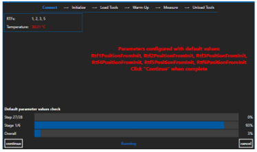
- Allow the RTF Verifier program to initialize all modules.
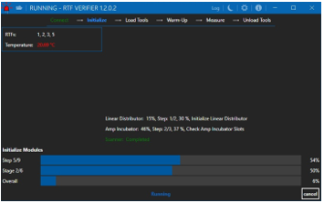
- Once modules have initialized, remove and save the protective cover. Load the RTF Verifier Tool into the Panther Service Queue or Fusion Elution Station slot 0 (towards the rear of the system).
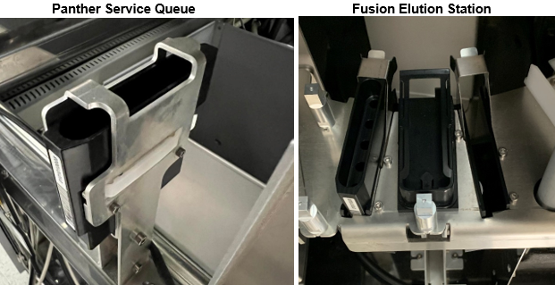
- Select tool 1 loaded.
Note:
For Panther Fusion, “Tool Loaded” will display.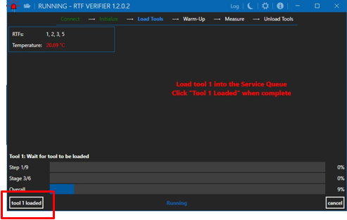
- Allow the software to wait during the 30-minute warm-up period (15-minute incubator warm-up plus an additional 15-minute tool warm-up).
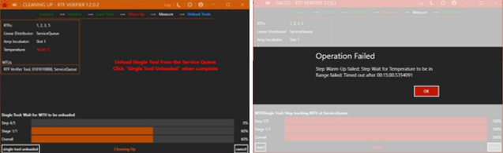
- After the warm-up period, the software will begin to move the tool around the incubator for approximately 10 minutes. Once completed, the software will prompt the user to unload the RTF Verifier Tool from either the Elution Station (on Fusion) or the Service Queue (on Panther).
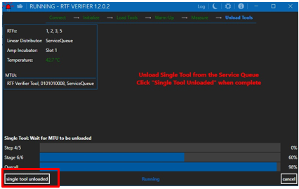
- Unload the RTF Verifier Tool and select single tool unloaded.
Note: For Panther Fusion, “tools unloaded” will display.
- Download the verifier report by clicking the explore output icon in the top left corner (folder symbol) and send the .csv file to your local support representative for review. Currently RTF Verifier data is being collected to justify the replacement of some Panther PQs with just an RTF Verifier run. Please send all logs and verifier reports to your local support (EU) or USTSESupport@hologic.com (non-EU) to help with the collection of this data.
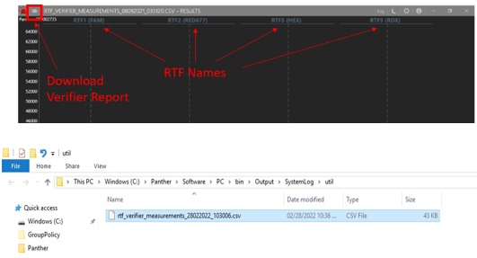
- Decontaminate the tool using a 10% bleach solution. Wipe or spray the tool with 10% bleach, wait 2 minutes, then wipe all bleach off. Wipe the tool with water to rinse off any bleach residue.
Note: DO NOT put the tool in a bleach bath. Use only lint free wipes from the Thermocycler cleaning kit to wipe the tool. See Real-Time Fluorometer (RTF) Verifier Tool Cleaning Procedure for additional details.
- PASS/FAIL criteria displays on the right. Ensure all RTFs PASS.
Note: The images below display the different windows shown by RTF Verifier after completing a run.
If an RTF reads FAIL, do not replace the RTF.
Download the logs (see the folder icon in the top-left corner) and attach the logs to send to your local support representative (EU) or USTSESupport (non-EU).
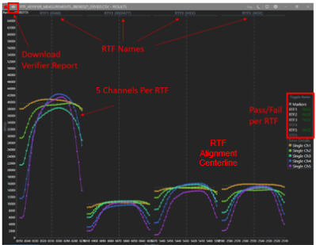
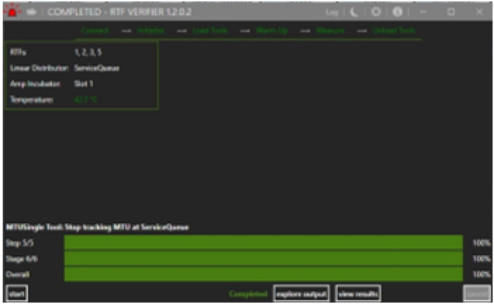
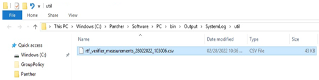
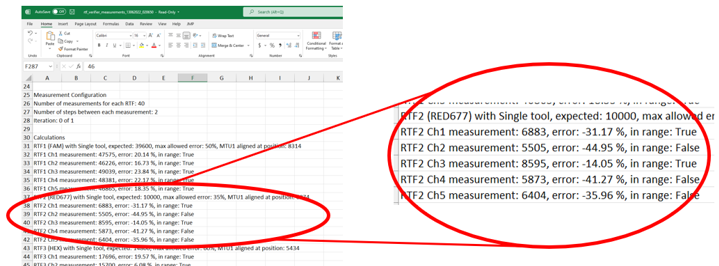
Note: Acceptable values for RED677 range from -50% to +100%. New RED677 RTFs are likely to have some or all of the channels reading above +30%. The image above demonstrates a set of values that pass with the new criteria. See the table below for acceptable values on each fluorometer.
Channel RTF Lower Limit Upper Limit FAM 1 -50% +50% RED677 2 -50% +100% HEX 3 -60% +60% ROX 5 -60% +60% - If any single channel displays an obvious dropout and reads “FAIL,” remove the RTF and check for debris. See Real-Time Fluorometer (RTF) - Cleaning Panther RTFs for additional information.
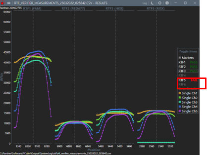
- All RTFs appear centered on the RTF Centerline for each RTF (see image above). Mis-centered RTFs will appear off-center. If any off-center RTFs exist, run RTF Aligner.
Note: The image below shows an example of off-centered RTFs that have not been aligned.
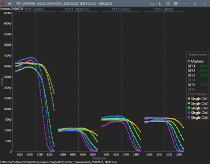
- After checking the graphs for dropping out channels and off-center RTFs, close the graphs. Select Explore Output to export the raw values in .csv format.
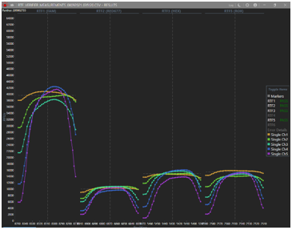
Each column in the graph above represents one of the Panther RTFs. The RTF name is visible at the top of each column and the channel for each RTF is individually graphed below. Each of the 5 channels graphed on each RTF are representative of the LED that sits below the respective MTU
When looking at channel to channel variation on RTFs, it should be noted that the FAM channels appear to be more spread out than other channels’ colors. This is due to the scaling of the graph. Because the FAM channel has higher RFUs in general (~40000 compared to 10000-15000 of other channels), the differences between the channels seems greater and the difference is normal.
Verification
- No verification required
 button at the top of the page to send feedback, comments, or change requests.
button at the top of the page to send feedback, comments, or change requests.